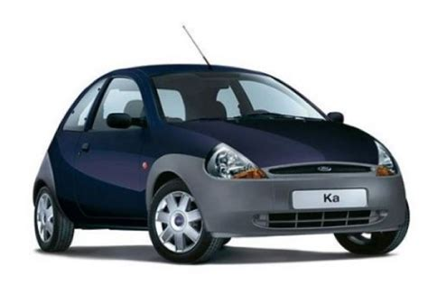
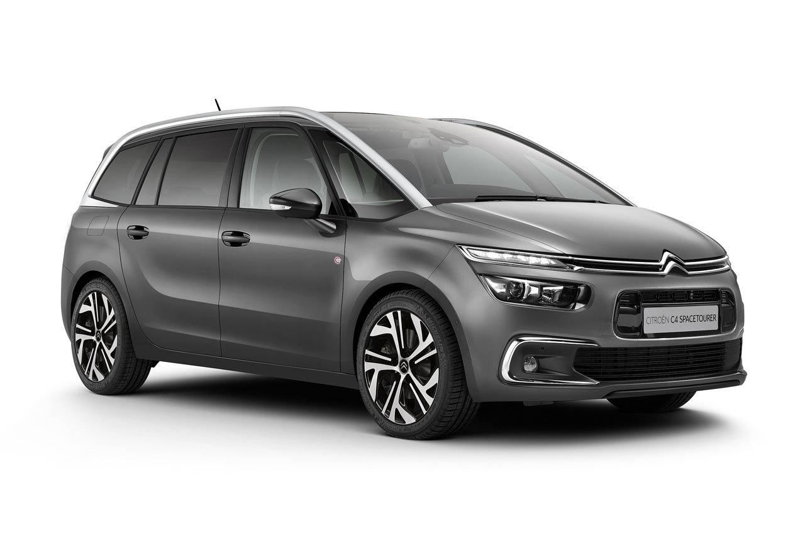
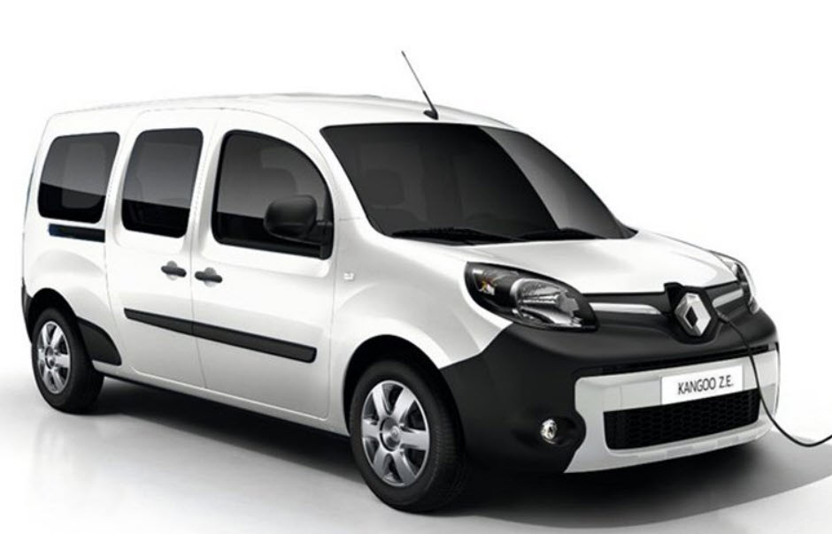
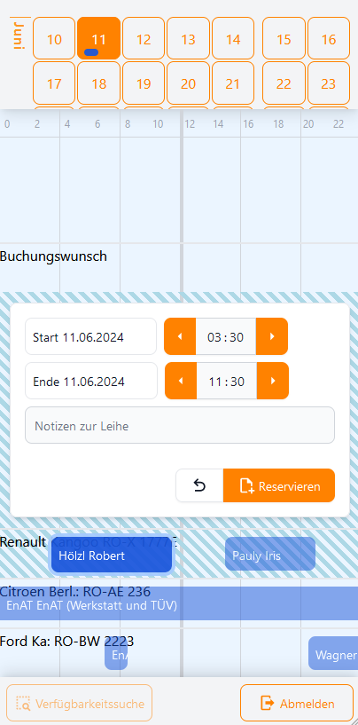

Wer sind wir?
Wir sind ein eingetragener Verein mit momentan fast 40 Mitgliedern und
3 eigenen Autos. Diese Autos teilen wir uns per
stationsbasiertem CarSharing.
Der Verein wurde 2015 im beschaulichen
Bad Endorf
gegründet und wächst
seitdem stetig. Die meisten Mitglieder nutzen unsere Autos als
Zweit- oder Drittautoersatz. Aufgrund der Bahnanbindung in Bad Endorf
haben wir aber auch Mitglieder, die dank EnAT zusammen mit Fahrrad
und Bahn komplett auf ein eigenes Auto verzichten können.
Als Verein von Gleichgesinnten freuen wir uns natürlich jederzeit über
Neumitglieder.
Insbesondere auch, da jedes weitere Mitglied die Auslastung der Autos
weiter verbessert und damit die Kosten für den Einzelnen auf Dauer
potenziell reduziert. Wenn du also Interesse hast würden wir uns sehr
über eine Mail oder einen Anruf
(siehe Kontakt) freuen.
Warum sollte ich EnAT nutzen?
Der Besitz eines eigenen Autos (oder 2 eigener Autos) ist insbesondere auf dem Land so selbstverständlich, dass sich kaum jemand über Alternativen Gedanken macht. Dabei kann eine Alternative wie EnAT je nach Lebenssituation deutliche Vorteile mit sich bringen:
- KostenvorteilJe nachdem, wie viele Kilometer man pro Jahr mit dem Auto zurücklegt, kann CarSharing deutlich günstiger sein als ein eigenes Auto. Der Bundesverband CarSharing geht davon aus, dass bei einer Jahreskilometerleistung von weniger als 10.000 km CarSharing bereits günstiger ist.
- UmweltschutzIn Zeiten des Klimawandels ist es unabdingbar, unseren Ressourcenverbrauch zu reduzieren. Da privat genutzte Autos i.d.R. sehr geringe Jahreskilometerleistungen haben, ist der Ressourcenaufwand, der durch die Produktion entsteht, auf den Kilometer umgerechnet, sehr hoch. Da CarSharing die Auslastung der Autos deutlich erhöht, wird der (Produktions-)Ressourcenverbrauch pro Kilometer entsprechend reduziert.
- Alternativen entdeckenDie Macht der Gewohnheit hält Autobesitzer oft davon ab, Alternativen in Betracht zu ziehen. Obwohl das Fahrrad auf Kurzstrecken ein sehr effizientes Fortbewegungsmittel ist, wird es oft nur als Freizeitgerät genutzt. Für viele längere Strecken bietet sich auch die Bahn an – mit dem großen Vorteil, die Fahrtzeit anderweitig nutzen zu können.
- FlexibilitätWir haben sehr unterschiedliche Autos. Das bedeutet für jeden Zweck ist ein perfekt passendes Fahrzeug dabei. Sei es, weil ein Sofa abgeholt werden muss, ein Familienausflug mit Kindern, Opa, Oma und Hund ansteht oder man einfach schnell zum Arzt muss.
- Kalkulierbare KostenEin Getriebeschaden oder neue Bremsen reißen kein Loch mehr in den Geldbeutel. Du weißt bereits vor der Fahrt exakt, wieviel das Ganze kosten wird.
- Weniger ÄrgerWenn das eigene Auto einen Schaden hat, muss man es nicht nur zur Werkstatt bringen, man muss auch irgendwie zurückkommen, entscheiden, ob sich die Reparatur lohnt, sich ggf. um ein Ersatzfahrzeug kümmern, und und und...
Außerdem will ein Auto ab und zu gewartet werden, braucht pro Jahr zweimal einen Reifenwechsel und sollte auch gelegentlich gereinigt werden. Das alles fällt mit CarSharing weg, da unsere jeweiligen Autoverantwortlichen all diese Aufgaben (ehrenamtlich) erledigen.
Und das beste: Das ganze wird jetzt auch noch mit 50 Chiemgauern gefördert.
Alles was dafür zu tun ist, ist sich anzumelden.
Welche Autos kann ich buchen?
Wenn unsere Mitglieder für eine Fahrt ein Auto brauchen, haben sie die Wahl
zwischen einem günstigen Ford Ka, einem enorm geräumigen Renault Kangoo sowie
einem familientauglichen Citroën C4 Picasso.
Desweiteren haben wir noch eine Kooperation
mit der Ameranger Autogemeinschaft (AmAG)
über die noch einmal zwei weitere Autos ausgeliehen werden können.
Die Nutzungskosten pro Fahrt bestimmen sich aus der Summe der Kilometer- und
der Zeitkosten.

Ford Ka
4 Sitze
0,30 EUR/km (bzw. 0,20 EUR/km*)
1,00 EUR/h (bzw. 0,20 EUR/h**)
1 Kindersitz (bis 12kg)

Citroën C4 Grand Picasso
7 Sitze
0,40 EUR/km (bzw. 0,30 EUR/km*)
1,00 EUR/h (bzw. 0,20 EUR/h**)
Anhängekupplung
Auf Anfrage Gepäckträger

Renault Kangoo (elektrisch)
5 Sitze
0,35 EUR/km (bzw. 0,25 EUR/km*)
1,00 EUR/h (bzw. 0,20 EUR/h**)
150 - 200 km Reichweite (Aussentemperaturabhängig)
* Langstreckentarif. Gilt ab dem 101. Kilometer einer Fahrt
** Nachttarif. Gilt von 18:00 bis 8:00 Uhr
Wie funktioniert's?
Um unsere Autos nutzen zu können, musst du Mitglied in unserem Verein sein. Hierbei entstehen folgende Kosten:
- Mitgliedsbeitrag: 30 EUR/Jahr
- Einmalige Einlage: 600 EUR
(wird bei Ausscheiden zurückbezahlt; siehe Nutzungsordnung Punkt 3) - Einmalige Aufnahmegebühr: 50 EUR
Wenn du als Mitglied ein Auto ausleihen möchtest, reservierst du zuerst per
PC oder Handy das gewünschte Auto für den gewünschten Zeitraum.
Das von uns eingesetzte
Buchungssystem "sharePAD"
bietet eine unkompliziertes Webbasierte App,
über die das Auto schnell gebucht werden kann. Außerdem zeigt es
übersichtlich an, wann welches Auto verfügbar ist:

Bevor du die eigentliche Fahrt antritts, holst du dir den Autoschlüssel
aus dem Tresor, der sich in der Umgebung des jeweiliges Autos befindet.
Im Auto befindet sich dann ein Fahrtenbuch, in das die Fahrt mit Kilometerstand
und Zeit eingetragen wird. Wenn das Fahrzeug während der Fahrt betankt
werden muss, trägst du dies ebenfalls ins Fahrtenbuch ein und legst die Rechnung
dazu. Der Tankbetrag wird dann bei der nächsten Abrechnung gutgeschrieben.
Dies gilt nicht für unser elektrisches Auto, da dieses an unserer
eigenen Wallbox geladen wird.
Einmal pro Quartal erhältst du dann eine Abrechnung über alle Fahrten.
Der entsprechende Betrag, abzüglich deiner Tankrechnungen, wird
per SEPA-Lastschrift von deinem Konto eingezogen. Dabei werden pro Fahrt
die Kosten für die gefahrenen Kilometer (siehe
Kilometertarif) sowie die Kosten für
die gebuchte Zeit
(siehe Zeittarif) aufaddiert und
in Rechnung gestellt.
Überzeugt? Dann werde Mitglied – wir freuen uns auf dich!
Du hast noch Fragen? Schreib uns gerne eine E-Mail oder ruf uns an.
(Kontakt)
(Kontakt)